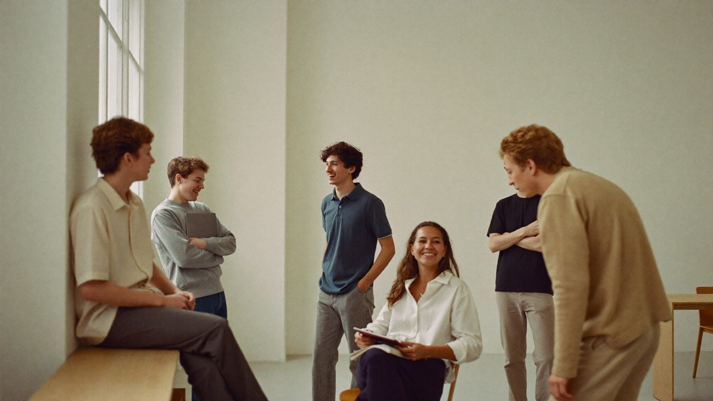

The right person can make
a real difference.
Nextrum started from a simple observation: someone who recently struggled with a course themselves often explains it better than someone who knows it by heart.

How do we help
your child?
With the right person, a plan, practice between sessions and a guarantee we stand behind. All on one and the same platform.
-
Tutoring
The right help, in the right place
Your child gets their own tutor, a study plan and sessions at home, at the library or online. After every session you get a report.
-
Expertise
Selected and interviewed
Our tutors recently took the same courses themselves. We interview and train them, and match on subject, level, needs and personality.
-
Experience
From the same school desk
They know what it is like to study for a test, get stuck on a task and understand something for the first time, because they did it themselves not long ago.
-
NexLäx
Practice between sessions
Nextrum’s own digital practice: short levels where every answer is marked straight away, with XP and badges. The tutor sees what has stuck.
How NexLäx works
We offer the grade guarantee because we are confident in our methods.
- Choose the subjects
- Keep it up all year
- See it all in your view
- We stay with you
Terms apply. Read the guarantee terms
Selected, interviewed
and prepared.
We put the time into the selection so you do not have to. It is one of the things you are paying us for.
-
First
Application and interview
Subjects, year groups and hours — and a conversation where we get to know the person behind the application.
-
Then
Approval and preparation
Only after approval are you visible to a family. We go through how a session is structured and how the report is written.
-
Ongoing
Follow-up
We follow up on sessions and collect feedback. The work does not stop at the match.
One hourly price.
No hidden fees.
The same price whatever the subject. Maths costs the same as Swedish, and a hard course does not cost more than an easy one.
No registration fee, no monthly fee and no minimum term. You pay for each session by card, either in advance or after the session when you confirm the report — and if you paid for a session that never happened, it is refunded. After the session you can choose an invoice instead, which comes at the start of the following month with ten days to pay and no fee.
All payment goes through Nextrum. That is the basis for you being able to see what was booked, what was paid and what took place — gathered in one place.
Ready to take the next step?
For those who want to learn more. For those who want to help others.
- No minimum term
- Costs nothing to ask